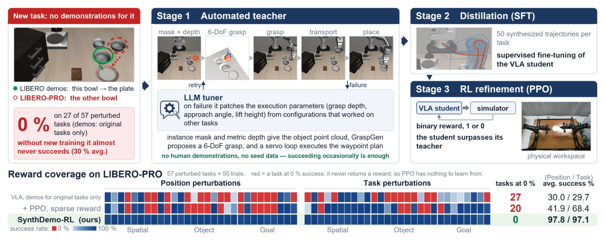
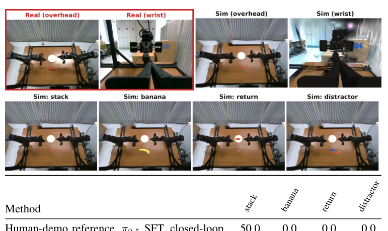
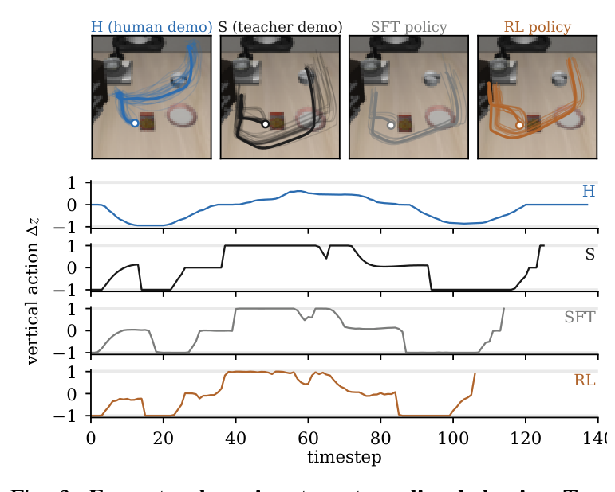

机器人操作
VLA 模型
强化学习
合成示范
arXiv 2609.21650 · 2026-09-18
SynthDemo-RL：用 LLM 引导的合成示范打破 VLA 适配中的"零奖励困境"
SynthDemo-RL: Breaking the Zero-Reward Barrier in VLA Adaptation with LLM-Guided Synthetic Demonstrations
Hiroaki Kingetsu, Hiroaki Kurihara, Kaoru Yokoo（Fujitsu）· Kenji Fukumizu（数理统计研究所 / Fujitsu）· Manohar Kaul（Institute of Statistical Mathematics）
一句话总结：当 VLA（视觉-语言-动作）模型迁移到新任务、且完全没有人演示时，稀疏二值奖励的 RL 几乎探索不出成功轨迹（大量任务成功率恒为 0%）。本文用一个自动化教师（GraspGen 抓取预测 + LLM 失败调参 + 脚本化执行）从仿真特权状态合成成功轨迹，先 SFT 蒸馏给学生策略，再用 PPO 精调——在 LIBERO-PRO 上把 27 个零成功率任务全部救活，最终平均成功率 97.8% / 97.1%，全程零人类演示。
01摘要解读
论文开篇点出了 VLA 模型落地的一大痛点：微调依赖人类遥操作示范，而 RL 微调在成功轨迹极难被采样时陷入探索困境。作者提出 SynthDemo-RL——一个教师-学生框架：
- 自动化教师：利用仿真器的特权状态（真值物体位姿、实例分割、深度等）生成成功的操作轨迹；
- VLA 学生：通过监督微调（SFT）从教师轨迹中蒸馏；
- PPO 精调：用二值任务成功奖励做强化学习，让学生超越教师。
摘要的一个方法论贡献是提出了 reward coverage（奖励覆盖率）概念：即"在固定评估协议下，至少观察到一次成功的任务占比"。作者指出：平均成功率衡量策略"有多好"，而覆盖率衡量 RL"在多少任务上有东西可学"——高平均分可能掩盖大量零成功任务，而这些正是稀疏奖励 RL 完全失效的地方。
27 → 0
零成功率任务数（LIBERO-PRO，27 个全部被救活）
97.8% / 97.1%
LIBERO-PRO Position / Task 轴平均成功率
96.0%
标准 LIBERO 三套件平均（零人类演示，仅比 50 条人演示/任务的 π0.5 低 1.7 分）
100%
真机 WidowX 开环执行 4 种条件 × 20 次试验全部成功
02研究背景与动机（Introduction）
从"依赖人类示范"到"零示范适配"
VLA 模型（如 OpenVLA、π0.5）凭借互联网级视觉-语言预训练在机器人操作上展现了强泛化，但适配下游任务通常仍依赖人类遥操作示范的模仿学习（SFT），这从根本上限制了 VLA 系统跨任务、跨环境的可扩展性。近期工作（SimpleVLA-RL、VLA-RL、RLinf-VLA 等）证明 RL 可以把 VLA 策略大幅提升到 SFT 基线之上，但它们全部假设有人类收集的示范做初始化。
零奖励困境（Zero-Reward Regime）
当任务被扰动、成功轨迹几乎无法被随机采样时，稀疏二值奖励的 RL 找不到任何可强化的行为——这就是论文的出发点。经典解法是给示范（不像 reward shaping 那样需要逐任务设计奖励）。作者的推理是：如果自动化流程能"偶尔"解出一个任务，其成功轨迹就可以被蒸馏进策略，作为稀疏奖励 RL 的初始化。
核心区分：平均成功率 vs 奖励覆盖率
关键概念：Reward Coverage（奖励覆盖率）
覆盖率 = 在评估协议下至少观察到一次成功的任务占比。一个策略可以在 30 个任务上拿 90%、在 27 个任务上恒为 0%，平均值仍然好看——但对这 27 个任务，RL 没有任何梯度信号可用。本文的核心实证发现之一就是：
初始化时是否有非零成功，与 RL 后的最终成败强相关（点二列相关 r = 0.71）。
目标场景：LIBERO-PRO 扰动任务
论文选择 LIBERO-PRO 作为"零演示适配"的试验田：它在原 LIBERO 任务上做系统性扰动（如移动初始物体位置、改写任务目标），而微调后的 VLA 在扰动版本上严重退化，且扰动版本不存在任何人类示范。图 1 展示了整个框架与核心结果。

图 1：SynthDemo-RL 总览。原任务（绿圈）有 LIBERO 演示，LIBERO-PRO 要求抓"另一只碗"（红圈），微调后的 VLA 在 57 个评分任务中的 27 个上成功率为 0%。自动化教师从仿真特权状态解出扰动任务 → SFT 蒸馏进 VLA 学生 → PPO 精调超越教师。底部：57 个任务的成功热图——直接 PPO 留下 20 个零成功任务，SynthDemo-RL 一个不留。
论文贡献
- SynthDemo-RL 流水线：自动化教师 + VLA 蒸馏 + 稀疏奖励 PPO，教师无需人类示范、无需任务特定训练；
- 奖励覆盖率诊断指标：证明蒸馏合成轨迹能救活全部 27 个零成功任务，而 PPO 匹配的稀疏奖励对照组让大多数任务停留在 0%；
- 合成 SFT 的局限分析：合成轨迹在运动统计量（饱和动作、jerk）和 frozen-base flow-matching 损失上与人类轨迹系统性不同；即使"人性化"教师缩小这些差异，SFT 仍远低于人类示范 SFT。
03方法详解：三阶段流水线
STAGE 1自动化教师采集
GraspGen 提出 6-DoF 抓取 + 脚本化航点执行 + LLM 失败调参，从特权状态合成成功轨迹（每任务 50 条）。
➜
STAGE 2SFT 蒸馏
用合成成功轨迹微调 π0.5 学生（flow-matching 目标，openpi 配方），让每个任务获得非零成功率。
➜
STAGE 3PPO 精调
Flow-SDE 提供闭式密度的 PPO，二值成功奖励、无 shaping，学生访问教师从未到达的状态并超越教师。
3.1 自动化教师：把特权状态变成成功轨迹
教师接收语言指令与仿真器状态（真值物体位姿、度量深度、实例分割、相机参数、末端位姿），围绕两个学习组件构建脚本化执行器：
- 目标指定与物体定位：任务定义给出操作对象和目标区域，仿真器提供真值位姿；实例掩码 + 度量深度经相机参数反投影成 3D 点云，作为抓取的几何输入。
- 抓取与放置：神经抓取预测器 GraspGen 在物体点云上提出 6-DoF 抓取候选，经包围盒过滤并默认顶向接近（接触深度可调）；放置位姿由目标物体顶面真值位置加偏移计算。
- 闭环执行：LLM 调参器（GPT-5.5）配置每个操作原语内的航点序列（pre-grasp → grasp → lift → pre-place → place → retreat，或抽屉的 contact-sweep-retreat）及执行参数；比例伺服逐步位置校正——这在接触丰富的抓取阶段至关重要（开环执行会发散）。
- LLM 引导调参：失败后，LLM 读取失败阶段与原因（执行日志）、失败尝试的观测图像、成功库（其他任务上有效的配置，按相关性排序）和失败库（本任务已试过的死路），提出修订配置（接触深度、接近角度、抬升与侧撤、放置偏移）。成功库跨几何相似任务迁移配置，失败库避免重蹈覆辙。
- 数据采集与过滤：记录多相机观测（第三人称 + 腕部）、7-DoF 动作与本体状态；事后只保留成功 episode、剔除空转转移，导出 LeRobot 格式。
教师的设计哲学：覆盖率优先，而非最优性
教师的目标不是生成漂亮轨迹，而是
确保每个任务都产出至少一条成功轨迹。在 57 个 LIBERO-PRO 任务上，LLM 平均每任务额外尝试 3.3 种不同执行配置；若无 LLM 修订（冻结初始配置重试 25 次），57 个任务中会有 12 个拿不到任何成功轨迹。正是 LLM 把"边缘抓取/捏取、调整抓取深度和侧撤"这类配置切换救活了抽屉、炉灶旋钮、架子放置等难任务。
3.2 离线策略蒸馏
教师每个 episode 约需 1.7 分钟（抓取推理 + 闭环规划），无法支撑 10–20 Hz 的在线控制，因此必须蒸馏。学生是 π0.5——一个 flow-matching VLA，从第三人称与腕部图像、本体状态和指令预测连续动作块。在 50 条成功 episode/任务上，按 openpi 配方训练（30,000 步、batch 32、峰值学习率 5×10⁻⁵、8 张 MI300X GPU）。标准 LIBERO 从公开 π0.5 基座出发；LIBERO-PRO 适配则从作者自训的 π0.5-LIBERO（人类示范 SFT 版本）出发，只用扰动任务上合成的轨迹，不回放原 LIBERO 数据。
3.3 RL 精调：Flow-SDE + PPO
通过 RLinf 框架应用 PPO，奖励就是二值任务成功（无 shaping），使优化目标与评估指标完全一致、无需逐任务奖励工程。为获得可处理的似然，采用 Flow-SDE：在每个去噪步注入高斯噪声，使转移具有闭式密度，各步对数密度之和即采样去噪路径的对数概率，用于 PPO 比率。关键技术细节：
- 每个 MDP 步执行一个动作块；稀疏奖励在 episode 结束时到达；
- GAE 在块步上运行，价值头挂在 π0.5 主干上（无独立 critic）；
- 每轮 8 次 rollout × 64 并行环境 × 240 块步；3 个去噪步、探索噪声 0.5、5 动作块 × 7-DoF；
- PPO 更新：全局 batch 2048 块步，γ=0.99、GAE λ=0.95、clip 0.2、dual clip 3.0，无 KL 惩罚与熵奖励；actor / value 学习率 5×10⁻⁶ / 1×10⁻⁴。
RL 的双重作用：一是从教师脚本化执行的偏差中恢复（访问教师从未产生的状态），二是让学生超越教师自身的可靠性——与蒸馏规划器（Neural MP、RPD）中的观察一致。
04实验设置
实验平台（仿真与真机）
- LIBERO（MuJoCo，Franka Panda 单臂）：评估 LIBERO-Spatial（10 任务，空间关系）、LIBERO-Object（10 任务，物体身份）、LIBERO-Goal（9 任务子集，目标变化）；排除 LIBERO-Long 等多阶段任务（教师只实现单原语）。
- LIBERO-PRO：对上述套件做系统扰动，选退化最严重的两个轴——Position（重排物体初始放置区域，指令不变）与 Task（改写目标谓词与指令，如"开中间抽屉"→"开底部抽屉"）。共 57 个评分任务（Position 29 + Task 28），每任务 50 次评估试验；训练用初始状态与官方评估集经哈希校验严格分离。
- RoboTwin 2.0（SAPIEN）：双臂基准的单臂 Agilex Piper 配置，4 个任务，作为跨仿真器、跨本体测试。
- 真机：Trossen WidowX AI 工作站（右臂、30 Hz、俯视 + 腕部 RGB），配 MuJoCo 数字孪生；孪生渲染将仿真手臂和物体合成到真实相机背景与 3D 高斯泼溅房间重建之上。策略完全在孪生中训练（LoRA 适配器），零真机微调。
评估指标
- 任务成功率：由仿真器内置成功检查器判定，报告每套件平均成功率（每任务 50 次试验；50% 成功率任务的二项标准误约 7 分）；
- 奖励覆盖率（reward coverage）：报告的评估试验中至少观察到一次成功的任务占比——本文的核心诊断指标；
- 运动统计差异（Cliff's δ）：饱和动作帧比例、jerk 范数、速度范数、frozen-base flow-matching 损失、DTW 多样性等，量化合成 vs 人类示范的距离；
- 真机上为开环轨迹可执行性（目标物体释放并静止在目标区域）。
对比方法
| 方法 | 说明 | 人类演示 |
|---|
| (a) SynthDemo-Teacher | 自动化教师（数据生成期单次尝试成功率） | 0 |
| (b) SynthDemo-SFT | 教师数据 + π0.5 SFT | 0 |
| (c) SynthDemo-RL（本文） | 教师数据 + SFT + PPO | 0 |
| (d) π0.5 (human-demo SFT) | 同学生架构，50 条人类遥操作演示/任务 | 50/任务 |
| (d') (d) + PPO | 与 (c) 相同 RL 配方的稀疏奖励参考 | 50/任务 |
| π0.5-LIBERO + PPO（对照） | LIBERO-PRO 上与本文 RL 计算量完全匹配的直接 PPO | 仅原任务 |
| SPARK / Pigey / CounterAlign | LIBERO-PRO 已发表方法（LLM 推理时规划 / 反事实离线 RL），引用作背景参照 | — |
| OpenVLA-OFT / SimpleVLA-RL | RoboTwin 2.0 上引用已发表结果（不同策略主干） | 专家演示 |
关键对照设计：在 LIBERO-PRO 上，直接 PPO 对照组与 SynthDemo-RL 使用相同的 PPO 配方、相同的迭代数与环境交互量（六个套件-轴条件平均 188 次迭代、2310 万块步），唯一差别是前者缺少"目标任务合成 + SFT"这一步——从而把增益干净地归因于合成示范初始化。
05实验结果与分析
5.1 标准 LIBERO：零演示达到人类示范水平
| 方法（LIBERO，50 试验/任务） | Spatial | Object | Goal | 平均 |
|---|
| (a) SynthDemo-Teacher（单次尝试） | 79.9 | 98.0 | 43.0 | 73.6 |
| (b) SynthDemo-SFT | 55.3 | 69.8 | 45.1 | 56.7 |
| (c) SynthDemo-RL（本文） | 96.2 | 98.6 | 93.3 | 96.0 |
| (d) π0.5 + 人类示范 SFT | 97.8 | 99.0 | 96.2 | 97.7 |
| (d') (d) + PPO | 95.8 | 99.0 | 97.3 | 97.4 |
要点：(b) 与 (d) 唯一差别是 50 条 SFT episode 的来源（合成 vs 人类），却相差 41 分——蒸馏本身远不能弥合差距；真正弥合差距的是 RL。(c) 比 SFT 高约 40 分，并在每个套件上超越教师单次尝试成功率（Goal 上 93.3 vs 43.0 尤为显著）。
5.2 LIBERO-PRO：零示范适配扰动任务（核心实验）
| 方法（50 试验/任务） | Position 轴 | Task 轴 |
|---|
| Spatial | Object | Goal | 平均/覆盖 | Spatial | Object | Goal | 平均/覆盖 |
|---|
| 适配前 π0.5-LIBERO | 48.4 | 16.8 | 24.7 | 30.0 · 14/29 | 51.2 | 10.8 | 27.0 | 29.7 · 16/28 |
| 直接 PPO（匹配 RL 计算量） | 50.8 | 33.6 | 41.3 | 41.9 · 15/29 | 79.2 | 52.4 | 73.5 | 68.4 · 22/28 |
| SynthDemo-Teacher（调参后） | 60.0 | 68.0 | 68.9 | 65.6 · 29/29 | 60.1 | 70.6 | 82.4 | 71.0 · 28/28 |
| SynthDemo-SFT | 57.3 | 56.5 | 54.8 | 56.2 · 29/29 | 53.3 | 66.3 | 42.7 | 54.1 · 28/28 |
| SynthDemo-RL（本文） | 96.4 | 99.0 | 98.0 | 97.8 · 29/29 | 95.0 | 99.6 | 96.8 | 97.1 · 28/28 |
| 参照：SPARK / Pigey / CounterAlign | Position 平均 46.5 / 54.7 / 50.7；Task 平均 40.9 / 52.0 / 45.0（各自协议，非受控比较） |
覆盖率才是关键证据
- 适配前 57 个评分任务中 27 个恒为 0%；直接 PPO 在其 RL 预算内只救回 10 个，17 个仍是 0%，还把 3 个原本非零的任务打到 0%；
- SynthDemo-SFT 在 RL 之前就让全部 57 个任务非零（三个训练种子均如此），SynthDemo-RL 最终覆盖率 57/57；
- 覆盖率对试验预算敏感：若每任务只跑 10 次试验，期望覆盖任务数为 π0.5-LIBERO 26.6、对照组 35.4、SynthDemo-SFT 53.6、SynthDemo-RL 57；
- 初始化是否非零与 RL 后结果强相关（点二列 r = 0.71）：零成功初始化平均终值 26.0%，非零初始化平均 91.7%。
其他发现：SFT 有遗忘——在原策略已解出的任务上蒸馏扰动数据会掉点（如 92→20、100→34），但 RL 基本挽回（92→20→92）；回放原 LIBERO 数据无助于适配（Position 轴 SFT 加入 20 条原任务数据后平均反而 57.7%→51.5%）。
5.3 RoboTwin 2.0：跨仿真器、跨本体
| 方法（100 次试验/任务） | place cup | move can | place a2b | beat hammer | 平均 |
|---|
| (a) SynthDemo-Teacher | 94.0 | 57.0 | 86.0 | 80.0 | 79.3 |
| (b) SynthDemo-SFT | 96.0 | 38.0 | 56.0 | 32.0 | 55.5 |
| (c) SynthDemo-RL | 96.0 | 60.0 | 66.0 | 75.0 | 74.3 |
| (e) OpenVLA-OFT（专家演示） | 77.3 | 28.1 | 37.5 | 28.1 | 42.8 |
| (e') +SimpleVLA-RL（专家演示） | 94.2 | 61.2 | 45.3 | 87.5 | 72.1 |
RL 把 SFT 平均从 55.5% 提到 74.3%，数值上接近用 1000 条专家演示/任务的 SimpleVLA-RL；增益最大的正是 SFT 最弱的 beat hammer（32→75）。但两个任务学生仍低于教师，place cup 上 RL 未改善强 SFT 策略。
5.4 真机可执行性

图 2：真机物理可执行性。上：真实相机视图与孪生混合渲染；中：孪生中的四种条件（stack / banana / return / distractor，仅 stack 有人类演示）；下：每条件 20 次试验的硬件成功率——本文方法 4×100%，人类示范参考（闭环）为 50 / 0 / 0 / 0。两行训练输入与执行模式不同，故为可执行性记录而非受控比较。
使用同一教师与 SFT+PPO 配方在孪生中训练 π0.5 学生（LoRA），零真机微调；策略在孪生中闭环跑出动作序列，然后在真机上开环执行（不做重规划）。四种条件各 20 次试验全部成功。注：闭环 sim-to-real 迁移未成功（观测敏感性分析指向前景手臂/盘子的渲染外观），这是论文明确声明的范围外项。
5.5 分析：合成示范到底差在哪？

图 3：从教师"签名"到策略行为。上：一个 LIBERO-Spatial 任务上人类示范（H）、教师示范（S）、SFT 与 RL 策略成功 rollout 的末端路径（加粗为各自中位绕行比的 episode）；下：加粗 episode 的竖直动作，灰带为饱和区（|a|≥0.9375）。RL 把几何"拉直"（中位绕行比 3.7→3.2，人类 2.5），但保留了教师的饱和签名（0.133 vs S 0.158 / H 0.027）。
- 运动统计完全分离两 sources：饱和动作帧与 jerk 范数 Cliff's δ≈1（竖直轴驱动）——这是伺服执行的签名，而非速度差异（速度仅 δ=0.58）；
- frozen-base FM 损失：合成 episode 在冻结 π0.5 基座下的预测误差系统性更高（δ=0.89/0.99/0.52）；
- "人性化"教师只买回一小部分差距：约束伺服速度与旋转到人类水平后重新生成数据，Spatial 上 SFT 仅从 55.3%→60.2%，在 42.5 分的人类示范差距中只关闭 4.9 分——说明差距还有轨迹形态、抓取语义等来源；
- RL 的收益不靠"更像人"：RL 使 detour ratio 关闭 41% 的 SFT-人类差距，但竖直动作分布反而更偏离人类轮廓——41 分的提升并未让测得的竖直动作更像人类。
06核心 Insights
1. 示范合成的目标应是"覆盖率"，而不是"平均分"
教师只需让每个任务"至少成功一次"（哪怕成功率只有 60%），剩下把平均分拉高的工作交给稀疏奖励 RL。这是全文最有行动价值的结论：数据生成系统不必追求完美执行，
必须保证零奖励任务被点亮。
2. 零成功初始化 ≈ RL 死刑
r = 0.71 的相关性表明：初始化为 0% 的任务，RL 后平均只有 26%；而非零初始化（哪怕弱到 0<SFT<50%）RL 后能到 97%。换言之，
SFT 的作用不是提高性能，而是提供 RL 可用的梯度信号。
3. LLM 调参器解决的是"长尾执行配置"
12 个无 LLM 就采不到数据任务的共性：铰接抽屉、炉灶旋钮、架子/柜顶放置、扁平细长容器——需要边缘抓取、捏取、调整深度与侧撤等非默认配置。成功库 + 失败库的设计让配置跨任务复用且不重复踩坑。
4. 蒸馏有 gap、RL 来买单
合成示范与人类示范有真实的分布差异（伺服签名：饱和动作、高 jerk、更高 FM 损失），且这解释不了全部 SFT 差距。但流水线对此鲁棒：
SFT 只需"够用"（全覆盖、非零），RL 负责修正脚本偏差并超越教师。标准 LIBERO 上 96.0% vs 人类示范 97.7% 仅差 1.7 分。
07局限与结论
作者声明的局限
- 不是"无仿真器"学习：教师消费真值仿真状态，RL 需要环境 rollout——目标域仿真（如数字孪生）是前置条件；用学习感知替换特权输入、用世界模型替换 RL 仿真器均未验证；
- SFT 遗忘：无回放的 SFT 会降低原已解出任务的性能（RL 可大幅挽回）；
- 单原语：教师每任务执行一个原语，多步操作（LIBERO-Long）需要子目标分解与原语排序，未实现；
- 闭环 sim-to-real 未解决（真机验证限于开环轨迹可执行性）；LLM 调参器依赖专有 API。
结论
SynthDemo-RL 证明：在 VLA 规模上，合成示范足以初始化稀疏奖励 RL，从而在目标任务分布上完全不需要新的人类示范。在 57 个扰动任务上，合成示范救活全部 27 个零成功任务，PPO 把成功率推到 97.8%/97.1%；标准 LIBERO 上零演示达 96.0%；流水线还迁移到 RoboTwin 2.0 与真机开环执行。对领域的启示是：示范合成的首要指标是 reward coverage，平均成功率留给稀疏奖励 RL 去提升。